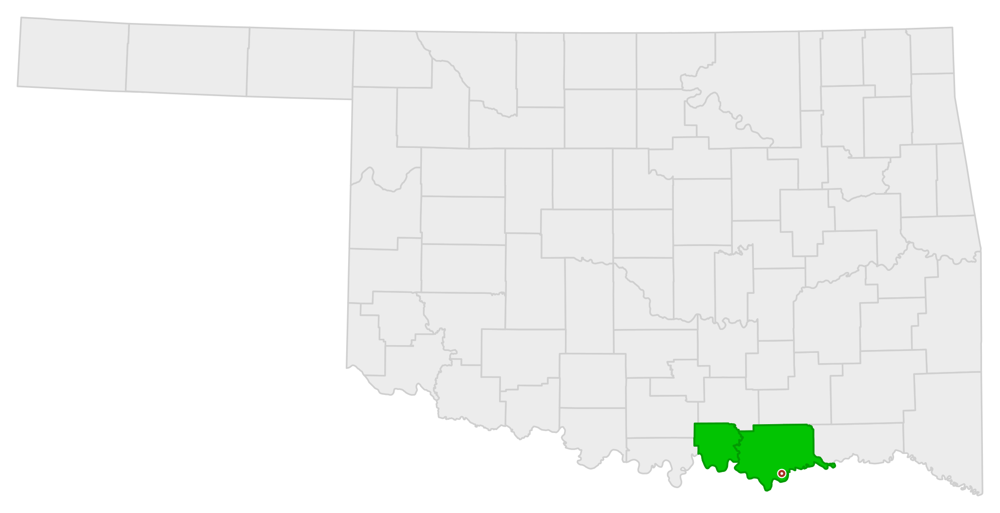

Based at 817 East Main Street in Durant, OK, we run trucks throughout Bryan County and Marshall County, Oklahoma, 24 hours a day, 7 days a week.
Home base. Fastest response times in and around Durant.
Just west of Durant along Lake Texoma, county seat Madill.

Need a vehicle towed farther than Bryan or Marshall County? We offer long-distance towing across Oklahoma and beyond. Give us a call and we'll get you a straightforward quote.
(580) 916-8697